ЗАНЯТИЕ 2.5. СМЕШАННОЕ ПРОИЗВЕДЕНИЕ ВЕКТОРОВ
Контрольные вопросы
- Какая тройка векторов считается правой (левой)?
- Что такое векторное произведение двух векторов?
- Каков геометрический смысл модуля результата векторного произведения?
- Как перемножить векторно векторы, заданные своими координатами в декартовой системе
координат?
- В чем состоит условие коллинеарности векторов? Какой вид условие коллинеарности имеет
в ортонормированной системе координат
Задачи
- 1. Определить, какой является тройка векторов
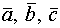
(правой или левой), если
| номер | 
| 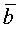 |
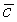 |
| а | 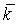 |
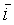 |
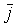 |
| б | |
|
|
| в | |
|
|
| г | 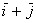 |
|
|
| д | |
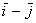 |
|
| е | |
|
|
- Векторы и
образуют угол 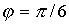 .
Зная, что 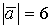,
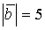 , вычислить
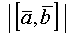 .
- Даны: 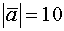 , 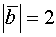 и
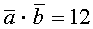. Вычислить .
- Векторы и
взаимно перпендикулярны. Зная, что 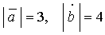 , вычислить:
а)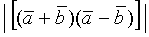 ; б) 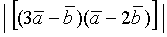.
- Векторы и
образуют угол 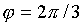 . Зная, что 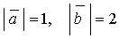 ,
вычислить:
а) 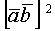 ; б) 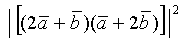 ;
в)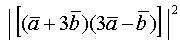 .
- Даны векторы 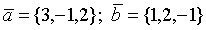. Найти координаты векторных произведений:
а)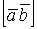 ; б) 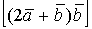 ;
в)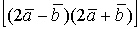 .
- Даны точки А(1,2,0), В(3,0,-3) и С(5,2,6). Вычислить площадь треугольника АВС.
- Даны вершины треугольника А(1,-1,2), В(5,-6,2) и С(1,3,-1). Вычислить длину его высоты,
опущенной из вершины В на сторону АС.
- Вектор 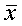 , перпендикулярный к векторам
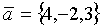
и 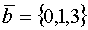 , образует с осью Оу тупой угол. Зная, что длина
равна 26,
найти
его координаты.
Ответы
- а) правая; б) левая; в) левая; г) правая; д) векторы компланарны; е) левая.
- 15.
- 16.
- а) 24, б) 60.
- а) 3; б) 27; в) 300.
- а) {5,1,7}; б) {10,2,4}; в) {20,4,28}.
- 14 .
- 5 .
- {-6,-24,8}.